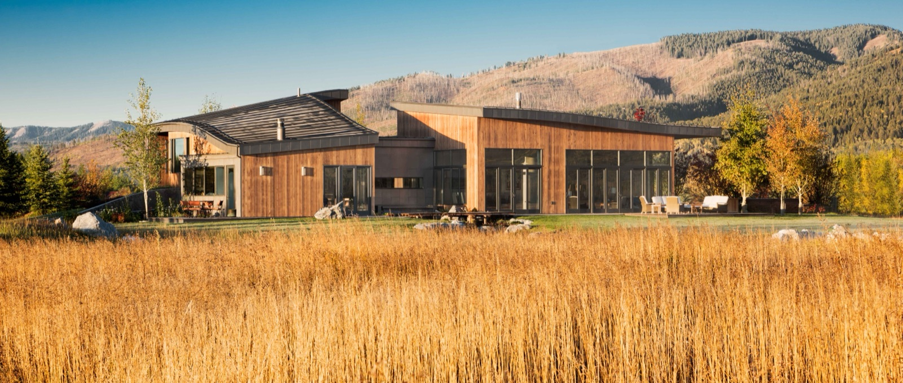
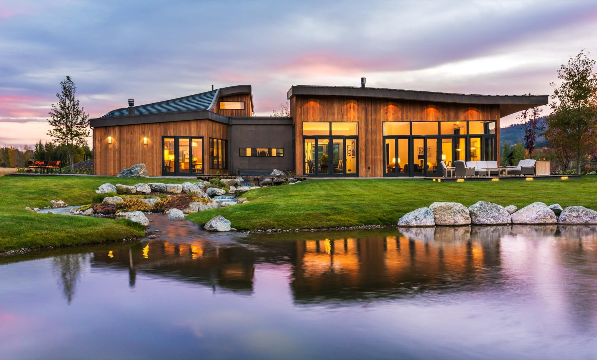
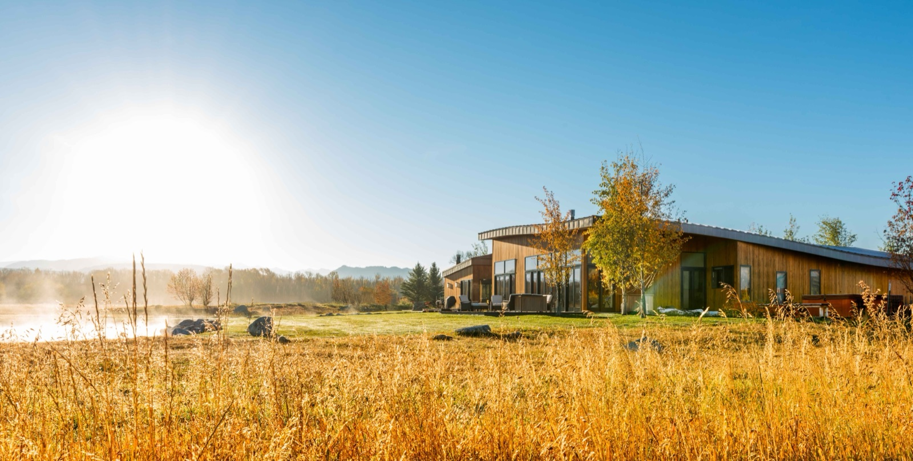
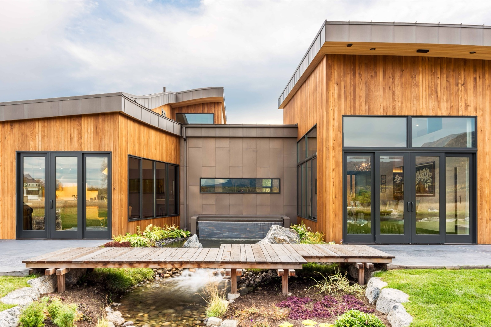
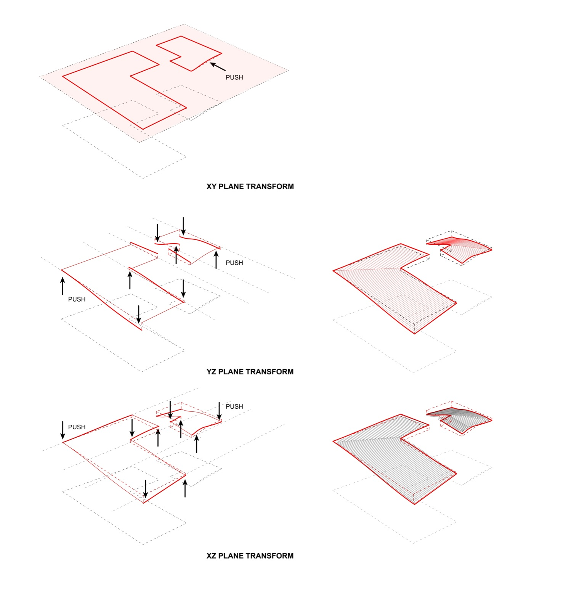
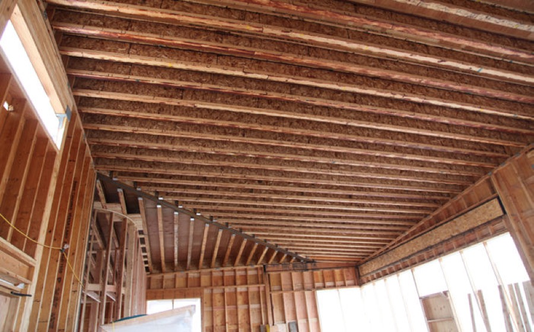
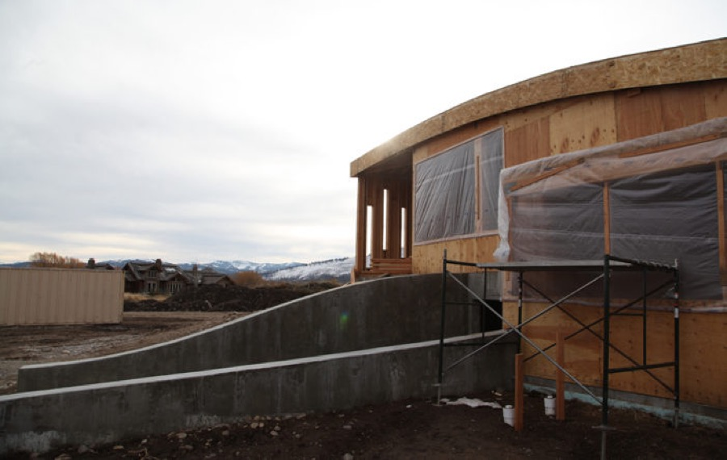
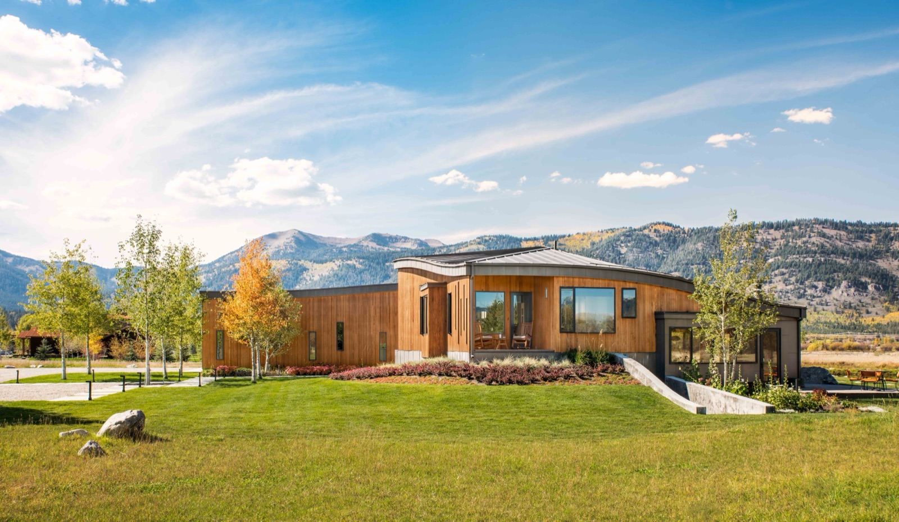

Building
Valley Butte House
Multiple Control Curves and Directional Shift
A house defined by its roof lines, and the roof lines by the land. The buttes emerge from the valley floor and explode into the Teton Range: a landscape of rising, folding, interrupted edges. The house translates that movement into two L-shaped volumes, then pushes their edges, first in plan and then in section. Each push shapes the edge; each bent edge drags a field of straight lines with it. A ruled surface, every member straight, the whole in continuous variation, reflecting the surrounding landscape and opening views to the Tetons beyond. The curve leaves the edge and enters the wall, carried by top plates framed flat against full-scale templates and tilted into place. The roof lines hold that movement: a spatial poetic that fixes the house in its landscape.
- Location
- Wilson, Wyoming
- Type
- Single-family residence
- Size
- 3,500 sf
- Status
- Built
Credits
Credits
- Team
- Design partners: Jefferson Ellinger, Nona Yehia
Design team: Lynne Opper, Abby Filanowski, Arial Smith, Julia Grabacz
Photography: Herring
8 images · swipe →






